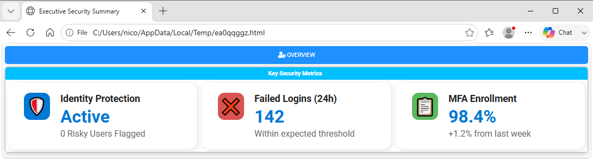

Chapter 8: Miscellaneous commandlets
Additional commandlets
In the past chapters, we explored the core functionalities of PSWriteHTML for creating interactive reports, dashboards, and visualizations. This chapter introduces additional commandlets that enhance the module’s capabilities, providing more flexibility and customization options for your HTML documents.
Using InfoCards with New-HTMLInfoCard
To display high-level KPIs, operational counters, or status summaries at the top of a dashboard, use New-HTMLInfoCard . InfoCards support icons (emojis, FontAwesome), custom colors, subtitle text, and distinct visual styles:
-Styles:
Standard,Compact,Fixed,Classic,NoIcon.-ShadowIntensity:
None,Subtle,Normal,Bold,ExtraBold,Custom(with-CustomShadowColor).-Icon: Icon to display on the card. Can be an emoji (like 👥, 🔒, 💪).
-IconSolid, -IconRegular, -IconBrands: Use FontAwesome icons with different styles
New-HTML -Title "Executive Security Summary" -Show {
New-HTMLTab -Name "Overview" -IconSolid "user-shield" {
# Section wrapping InfoCards with Comfortable spacing
New-HTMLSection -HeaderText "Key Security Metrics" -Density Comfortable {
New-HTMLInfoCard -Title "Identity Protection" `
-Number "Active" `
-Subtitle "0 Risky Users Flagged" `
-Icon "Shield" `
-IconColor '#0078d4'
New-HTMLInfoCard -Title "Failed Logins (24h)" `
-Number "142" `
-Subtitle "Within expected threshold" `
-Icon "Error" `
-IconColor '#d9534f'
New-HTMLInfoCard -Title "MFA Enrollment" `
-Number "98.4%" `
-Subtitle "+1.2% from last week" `
-Icon "Report" `
-IconColor '#5cb85c'
}
}
}
This is the result:

Fig. 24 Dashboard information cards displaying high-level operational metrics.
Next Chapter: Chapter 9: Custom Styling, CSS, and Themes